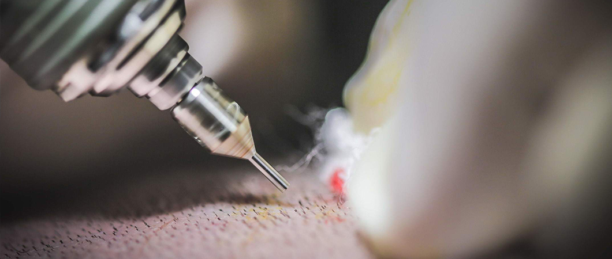

زراعة الشعر للنساء في تركيا
تعدُّ زراعة الشعر عند النساء حلّاً مناسباً للنساء اللّواتي يعانين من فقدان الشعر أو قِلَّة كثافة الشعر، في مقدمة أو منتصف فروة الرأس أو في مناطق أخرى من الرأس
دعنا نتصل بك

عمليات بالون المعدة في تركيا
يعتبر بالون المعدة من الأفكار الثوريّة في مجال جراحات السمنة وهو عبارة عن بالون خفيف ومرن يساعدك على...
حشو الأسنان في تركيا
حشو الأسنان ومعالجة العصب، تقنيات في طب الأسنان تستعمل لعلاج التسوس وترميم الأسنان المتكسرة، يستخدمه...
تقنية زراعة شعر الذقن والشارب في تركيا
زراعة اللحية والشارب في تركيا حل مثالي لكلّ من يعاني من ضعف أو عدم نموّ شعر اللحية أو الشارب، وذلك و...
جراحة الصدر
تشمل جراحة الصدر الجراحات التي تُجرى لعلاج الأعضاء التي تستقرّ داخل الصدر، وتشمل المريء وعلاج القصبة...
تُعدُّ زراعة الشعر للنساء في تركيا، من أهم خدمات زراعة الشعر إقبالاً؛ فإذا كان فقدان شعر الرأس مشكلة صحيَّة مزعجة، فلا بدّ أنّها ستكون أشدّ إزعاجاً حين تواجهها النساء! وفي حال لم تعالَج تلك الحالة في حينها، فقد تتطوّر وتتسبّب بخلوّ أماكن أوسع من أرضية الرأس.
جدول المحتويات
- متى تكون عمليات زراعة الشعر للنساء؟
- التقنية المستخدمة في زراعة الشعر بدون حلاقة للنساء
- هل زراعة الشعر بدون حلاقة مناسبة للنساء؟
- مزايا وسلبيات زراعة الشعر بدون حلاقة للنساء
- كم تستغرق عملية زراعة الشعر من الوقت في تركيا؟
- ما هي مراحل زراعة الشعر للنساء؟
- زراعة الجبهة للنساء
- زراعة شعر مقدمة الراس للنساء
- نتائج زراعة الشعر للنساء قبل وبعد
متى تكون عمليات زراعة الشعر للنساء؟
بخلاف الرجال فإنّ جميع البصيلات عند النساء تكون معرَّضة للآثار الهرمونيّة، حتى في جوانب فروة الرأس ومؤخّرته.
ويمكن زراعة الشعر للنساء في حالات معيّنة، منها:
- وجود مناطق أو بقع خالية من الشعر.
- فقدان الشعر في منطقة معيّنة نتيجة لإصابة قديمة أو حروق أو ندوب عمليّة قديمة.
- فقدان الشعر بسبب عوامل غير هرمونيّة، كشدِّ الشعر، أو بعض الأمراض النفسيّة.
- فقدان الشعر المماثل لأنماط فقدان الشعر لدى الذكور.
كيف تتمّ عملية زراعة الشعر للنساء؟
- يتمّ تطبيق تقنية Micro FUE والتي تعتمد على أخذ بصيلات الشعر واحدة واحدة من المنطقة المانحة وزراعتها في المنطقة المستفيدة، باستخدام جهاز مخصَّصٍ لفتح القنوات.
- ولأنّ قطر الشعرات عند النساء أقلّ منه لدى الرجال، تكون القنوات أصغر حجماً، بحيث لا تتجاوز 0.75 ملمتراً.
- يمكن الاستغناء عن قصّ الشعر تماماً عند زراعة شعر مقدمة الرأس للنساء، ولا يتجاوز عدد البصيلات المراد زراعتها 2000 بصيلة، حيث يُكتفى بقصِّ بعض الشعرات في المنطقة المانحة فقط، أمّا في حال زيادة عدد البصيلات المطلوبة، فقد يلجأ الطبيب لحلاقة الشعر كاملاً.
يمكن الزراعة أيضاً باستخدام تقنية DHI، أو باستخدام أقلام تشوي المتقدمة، التي يتمّ فيها فتح القنوات والزراعة في خطوة واحدة.
التقنية المستخدمة في زراعة الشعر بدون حلاقة للنساء
تعتبر تقنية (DHI) أو زراعة الشعر المباشر التقنية المتبعة في زراعة الشعر بدون حلاقة وهي المفضلة للكثير ممن لا يرغبون بحلق شعرهم وفي مقدمتهم النساء.
هل زراعة الشعر بدون حلاقة مناسبة للنساء؟
يفضل النساء زراعة الشعر بدون حلاقة لتجنب خسارة مظهرهن الذي اعتدن عليه بالإضافة إلى الاحراج الاجتماعي، ففي عملية زراعة الشعر بدون حلاقة أصبح هذا الخيار ممكناً، ولكن يجب اختيار المركز والفريق الذي سيقوم بالعملية بعناية فائقة، فعامل الخبرة والمهارة يلعب دوراً كبيراً في الحصول على النتائج المرجوة، اتصلي بنا لمعرفة ما إذا كنتِ مرشحة مناسبة لعملية زرع شعر بدون حلاقة، دعينا نعد خطة زراعة الشعر الأفضل لك مع فريق الخبراء لدينا.
مزايا وسلبيات زراعة الشعر بدون حلاقة للنساء
-
المزايا
- تتم عملية زراعة الشعر بدون حلاقة الشعر مما يجنب النساء الإحراج والمظهر غير المرغوب به.
- زراعة الشعر التقليدية قد تسبب الندوب والاحمرار بفروة الرأس عكس العملية بدون حلاقة لذلك يمكنهن أن يمارسن حياتهن الطبيعية في اليوم الثاني للعملية.
- وقت نقاهة واستشفاء أقصر من عمليات زراعة الشعر التقليدية.
- محاكاة اتجاه الشعر الأصلي مما يعطي مظهر طبيعياً.
-
السلبيات
- تستغرق عملية زرع الشعر بدون حلاقة وقتاً أطول بشكل عام مقارنةً بطرق زرع الشعر الأخرى.
- تعتبر عملية زرع الشعر بدون حلاقة أكثر تكلفة بقليل من عمليات زراعة الشعر الأخرى.
كم تستغرق عملية زراعة الشعر من الوقت في تركيا؟
عند اتّخاذكِ القرار بإجراء عملية زراعة الشعر للنساء، سيتطلّب الأمر البقاء في مدينة اسطنبول 4 أيام فقط، وسيكون بإمكانك العودة إلى حياتك بشكل كامل بعد يومين من العلاج، ومن دون أيّة ندوب أو آثار جانبية.


ما هي مراحل زراعة الشعر للنساء؟
تتمّ زراعة الشعر للنساء بدون حلاقة لاسيما عند استخدام تقنية DHI وذلك وفق الخطوات التالية:
1- حلاقة جزء صغير من مؤخرة فروة الرأس
وهو الجزء الوحيد الذي تتمّ حلاقته فقط، حيث ستُغطّى تلك البقعة الصغيرة بالشعر، ولن يتمكّن أحد من ملاحظتها.
2- استخدام مخدِّر موضعيّ
دون استخدام الإبر، حيث يتمّ الاستعاضة عنها باستخدام أجهزة حقن خاصّة لا تسبّب الألم.
3- اقتطاف البصيلات
باستخدام جهاز الميكروموتور، والذي يَستخدم إبراً رفيعة لا تتجاوز الملميتر الواحد.
4- زراعة البصيلات واحدة تلو أخرى
باستخدام تقنية أقلام تشوي، أو باستخدام تقنية غيرها، بحسب طبيعة التقنية التي تم اختيارها، مع تتمّ مراعاة منتهى الدقّة في الاتجاه والزاوية المناسبة لكلّ شعرة، للحصول على نتيجة طبيعية ومثاليّة.
علاجك.. لتكن الصحة تاجك..
وهو الجزء الوحيد الذي تتمّ حلاقته فقط، حيث ستُغطّى تلك البقعة الصغيرة بالشعر، ولن يتمكّن أحد من ملاحظتها دون استخدام الإبر، حيث يتمّ الاستعاضة عنها باستخدام أجهزة حقن خاصّة لا تسبّب الألم باستخدام جهاز الميكروموتور، والذي يَستخدم إبراً رفيعة لا تتجاوز الملميتر الواحد باستخدام تقنية أقلام تشوي، أو باستخدام تقنية غيرها، بحسب طبيعة التقنية التي تم اختيارها، مع تتمّ مراعاة منتهى الدقّة في الاتجاه والزاوية المناسبة لكلّ شعرة، للحصول على نتيجة طبيعية ومثاليّةمراحل زراعة الشعر للنساء
زراعة الجبهة للنساء
تعتبر زراعة الشعر خياراً مناسباً للنساء اللاتي لديهن جباه كبيرة حيث أنه بإمكانهن زراعة الشعر في مقدمة رؤوسهن للحصول على جبهة أضيق، كما سنتطرق له في العنوان التالي.
زراعة شعر مقدمة الراس للنساء
تجري بعض النساء زراعة مقدمة الرأس بهدف الحصول على جبهة أصغر، وهن النساء اللاتي تعاني من اتساع حجم الجبهة وهي المساحة بين الحواجب وبداية الشعر فعندما تكون كبيرة يتأثر شكل الوجه، وفي هذه الحالة تتم زراعة عدد من خطوط الشعر لتصغير حجم الجبهة.
تعتمد زراعة مقدمة الرأس للنساء على نقل وحدات الشعر من منطقة كثيفة إلى منطقة مقدمة الرأس أو الخط الأمامي للشعر مما يجعل مساحة الجبهة الفارغة من الشعر تقل بشكل طبيعي.

نتائج زراعة الشعر للنساء قبل وبعد
تعد زراعة الشعر الخيار العلاجي المفضل للنساء، لهذا الخيار نسبة عالية من النجاح مع النساء اللواتي يعانين من تساقط الشعر وتحصل الغالبية العظمى من النساء على نتائج مرضية للغاية.
ومع ذلك، يجب أن نأخذ في الاعتبار أنه ليست كل النساء مرشحات جيدات لزرع الشعر، يمكنكم معرفة إذا ماكنت مرشحة مناسبة لعملية زراعة الشعر والاطلاع على نتائجها عبر التواصل معنا.
هل لديك إستفسار : تواصل معنا - الإستشارة مجانية


علاجك الطبية .. لتكن الصحة تاجك.